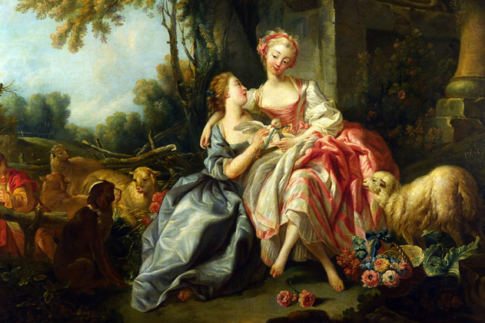
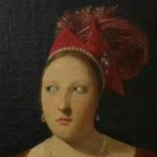
搞怪的文艺复兴乐谱
库客音乐
文艺复兴时期，哇，听起来好高大上对不对，脑子里想的都是但丁、达芬奇、拉斐尔这些大师，和他们的艺术品。
今天介绍的，和你想的完全不一样哦
在这本16世纪的乐谱中，是充满了最奇妙的和超现实的插图，让人看到了文艺复兴那最世俗的一面，也让小编脑洞大开：

乐谱下方画了这么多劳动场面，这谱子一定是劳动号子了！
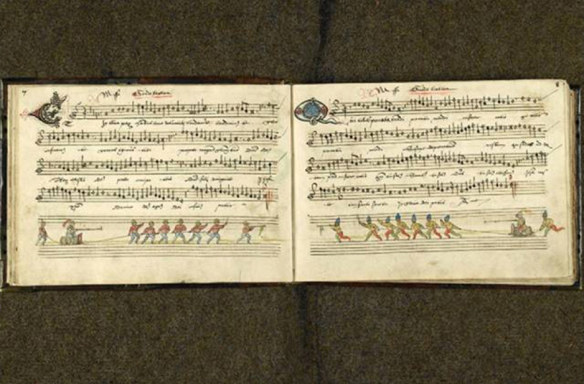
配图这是要开打啊?这首歌，大概叫做《红星照我去战斗》吧……
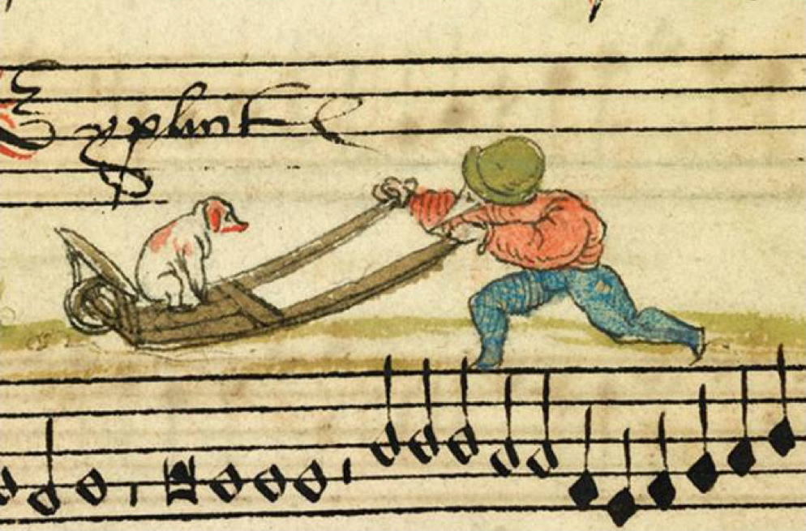
实在看不懂这田间劳动的是人是鸟？
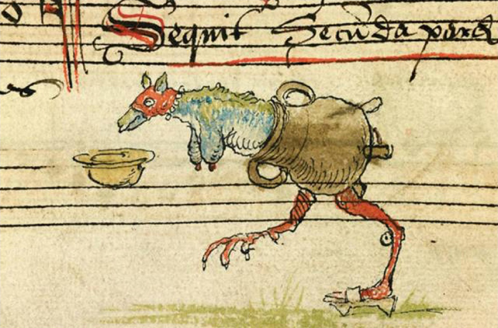
看这鸟足狗头的生物幸福的对着食盆眯起眼睛的模样，小编判定这是一首丰收歌。
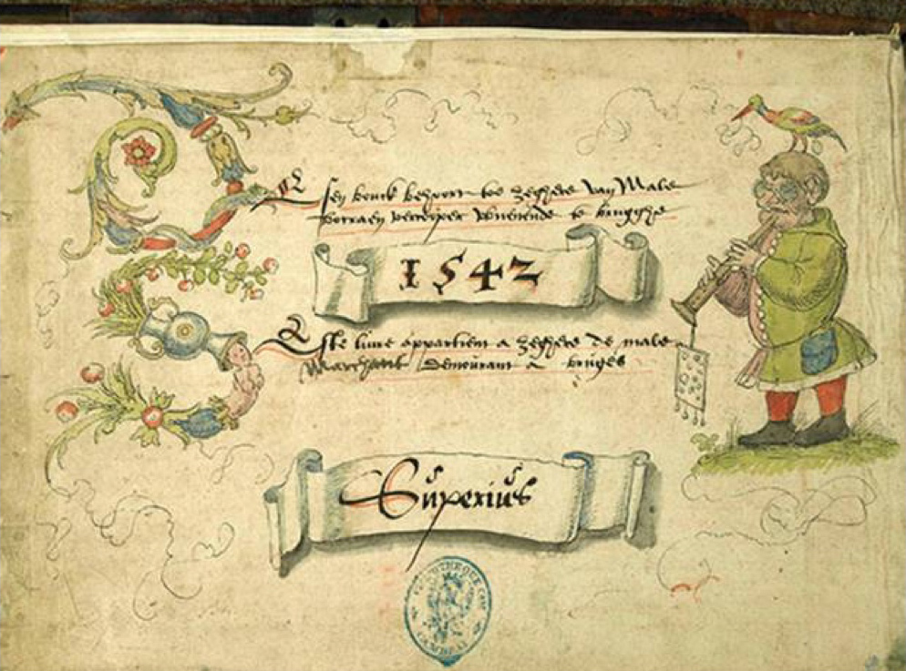
呆萌乐谱的配色让我想起秘密花园。
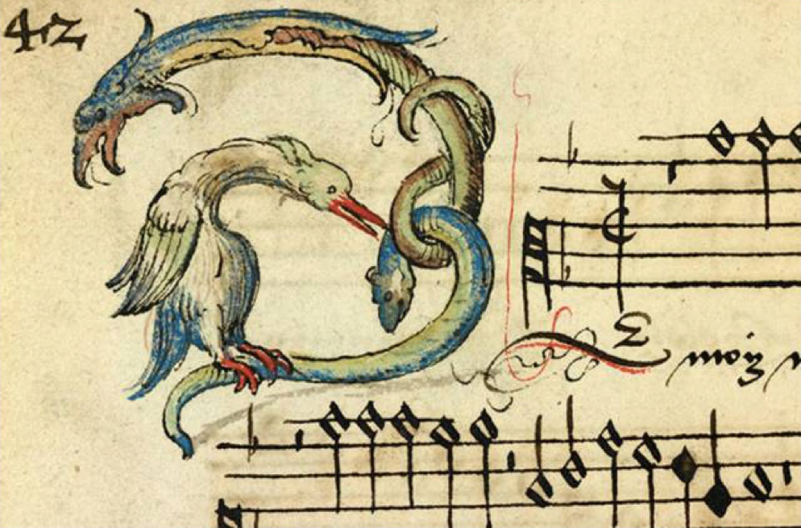
这个我完全get不到图画的意义，大概和“海青拿天鹅”差不过意境吧……
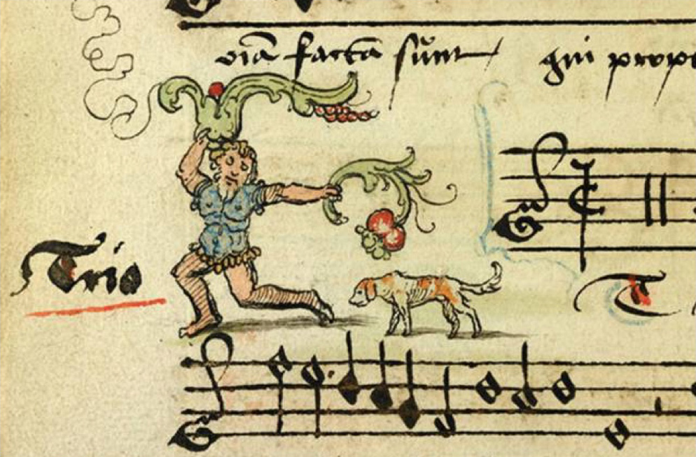
金发胡子男穿着蕾丝款内衣和黑丝在纵情奔跑，手里还拿着葡萄一类的果子。应该是酒神？至少是酒神的信徒，这是喝醉了在奔跑呢。
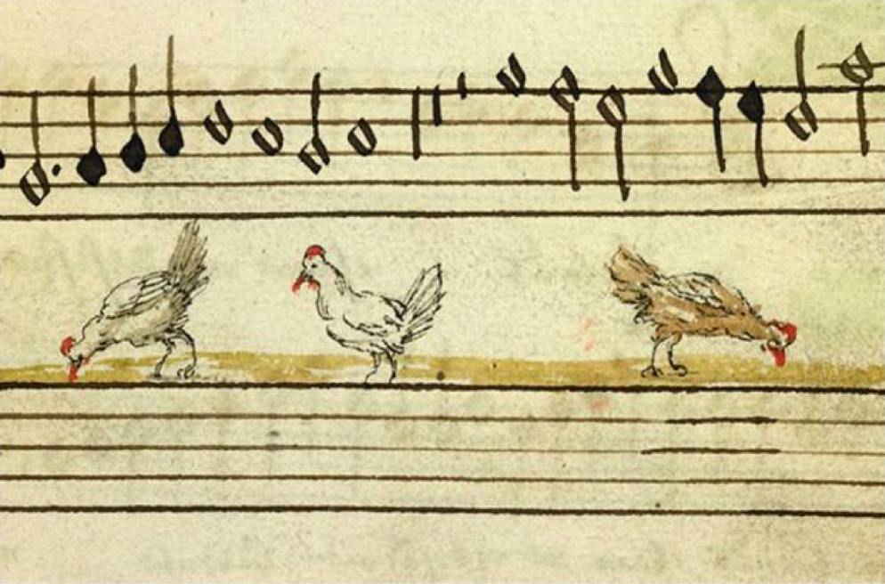
我觉得配这如此田园的插图，这首歌应该是中世纪的《老麦克唐纳农场》，咿呀咿呀呦！
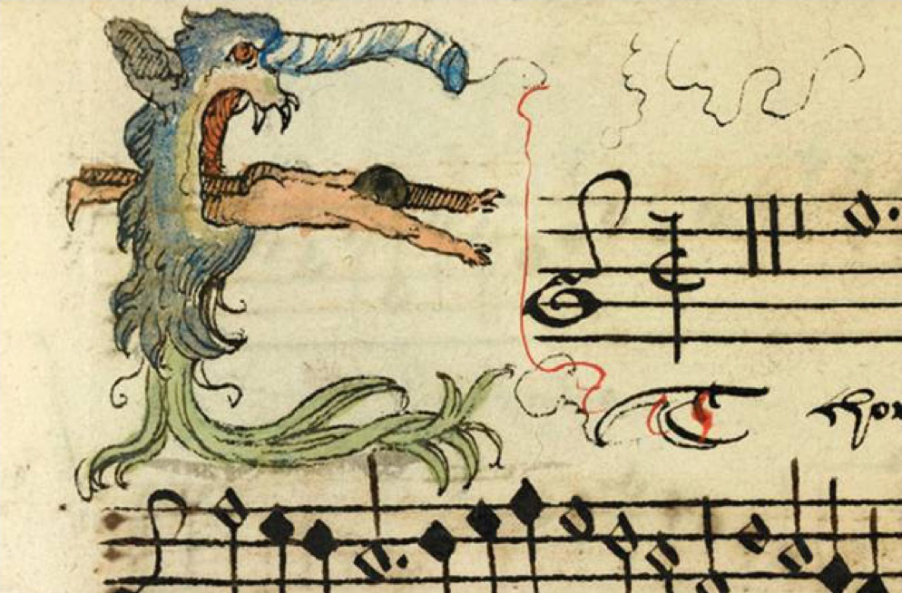
音乐与舞蹈密不可分，所以这首曲子前面画了舞蹈最标志性的动作“五体投地”来说明。
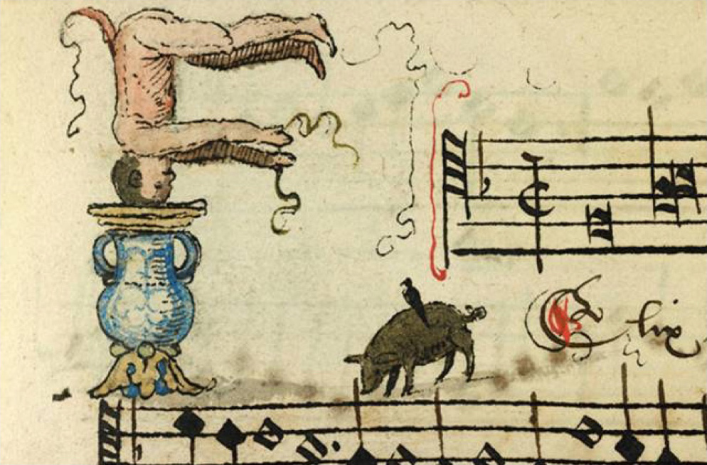
呦，呦，街舞动作都出现了，这首曲子一定相当动感的说~